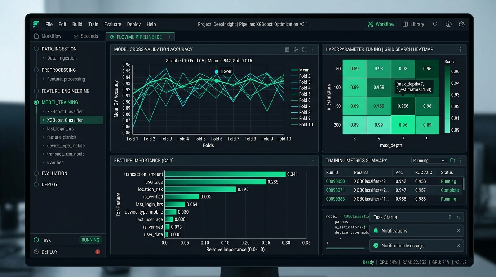
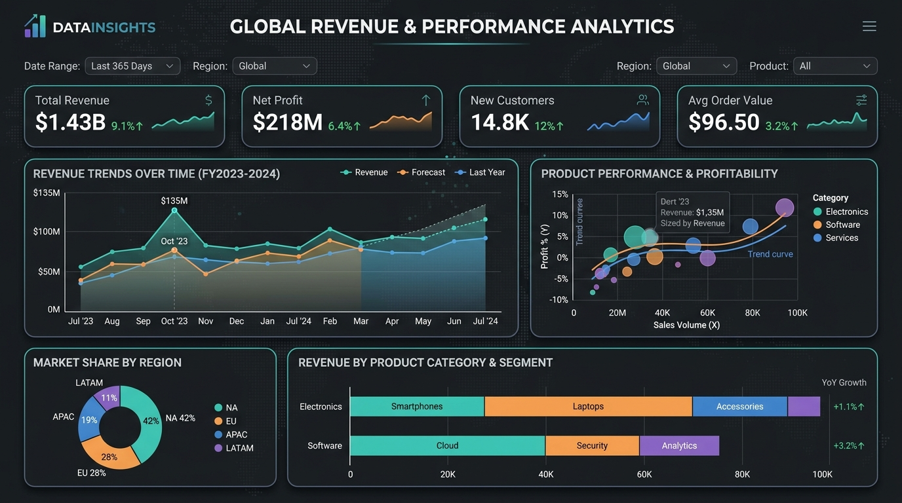

Hi, I'm Swayam Chaturvedi. Entry-level software developer focused on building clean web applications, REST APIs with Java & Spring Boot, event messaging with Kafka, and practical machine learning pipelines.
I am a software developer focused on building clean, data-informed software architectures. My practical engineering experience spans web development from my internship at BeeSkilled, event-driven backend projects built with Java, REST APIs, and Apache Kafka, and predictive machine learning models.
I enjoy writing maintainable code and learning pragmatic system design—from writing structured REST API controllers to evaluating financial default risk using Generative AI workflows and designing analytical dashboards in Tableau. My focus is on shipping clean, well-tested code.
Clean Architecture
Modular design patterns, structured API controllers & REST endpoints.
Event-Driven Streaming
Asynchronous messaging with Kafka, H2 databases & pipeline reliability.
Analyzed customer financial datasets to identify default indicators. Built predictive classification models using Scikit-Learn to estimate loan default risk and generated structured risk profiling reports using GenAI prompts.
PythonGenAIScikit-LearnRisk Modeling
inspect_architecture()
JPMorgan Chase Simulation
Distributed SystemsJun 2024
Event-Driven Streaming Backend Architecture
Built a prototype event-driven messaging service using Java and Apache Kafka to explore asynchronous communication between backend components. Configured H2 in-memory database schemas and REST controllers for request handling.
JavaApache KafkaSpring BootREST APIs
inspect_architecture()

Unified Mentor
Machine LearningAug 2024
End-to-End Machine Learning Pipeline
Constructed modular ML scripts in Python applying feature preprocessing, hyperparameter grid search, and multi-metric cross-validation to evaluate model performance on benchmark datasets.
PythonScikit-LearnGridSearchCVPandas
inspect_architecture()

Coursera & Edureka
Visual AnalyticsDec 2024
Data Science Analytics & Visual Intelligence
Created structured Tableau analytical dashboards using multi-variable datasets to visualize performance indicators, trends, and business data insights.
TableauData VisualizationEDASQL Querying
inspect_architecture()
// 05. Developer Playground
Type interactive commands directly into the terminal below to query resume details, skills, or trigger easter eggs.
Shortcut: Cmd + K
swayam@macbook-pro: ~/portfolio
zsh live session
Welcome to Swayam's Interactive Portfolio CLI v2.4.0.
Type 'help' to see available commands. Try 'sudo hire-me' for a quick summary.
swayam@dev:~$
// 06. Verified Credentials
GenAI Powered Data Analytics
Tata Group • Forage Simulation • May 2024
ID: 6abe96252b0e8ee96d8b8aa5
Machine Learning Professional Certificate
Unified Mentor • Aug 2024
ISO Verified Certificate
Software Engineering Job Simulation
JPMorgan Chase & Co. • Forage • Jun 2024
ID: qmvk4xAE2gKMNAWWS
Tableau for Data Science Workflow
Edureka via Coursera • Dec 2024
ID: 2Q4MVITTQHUP
// available for engineering roles
Let's build something together.
Whether you are hiring for backend software engineering, AI/ML development, or full-stack positions, feel free to send an inquiry or drop a direct note.